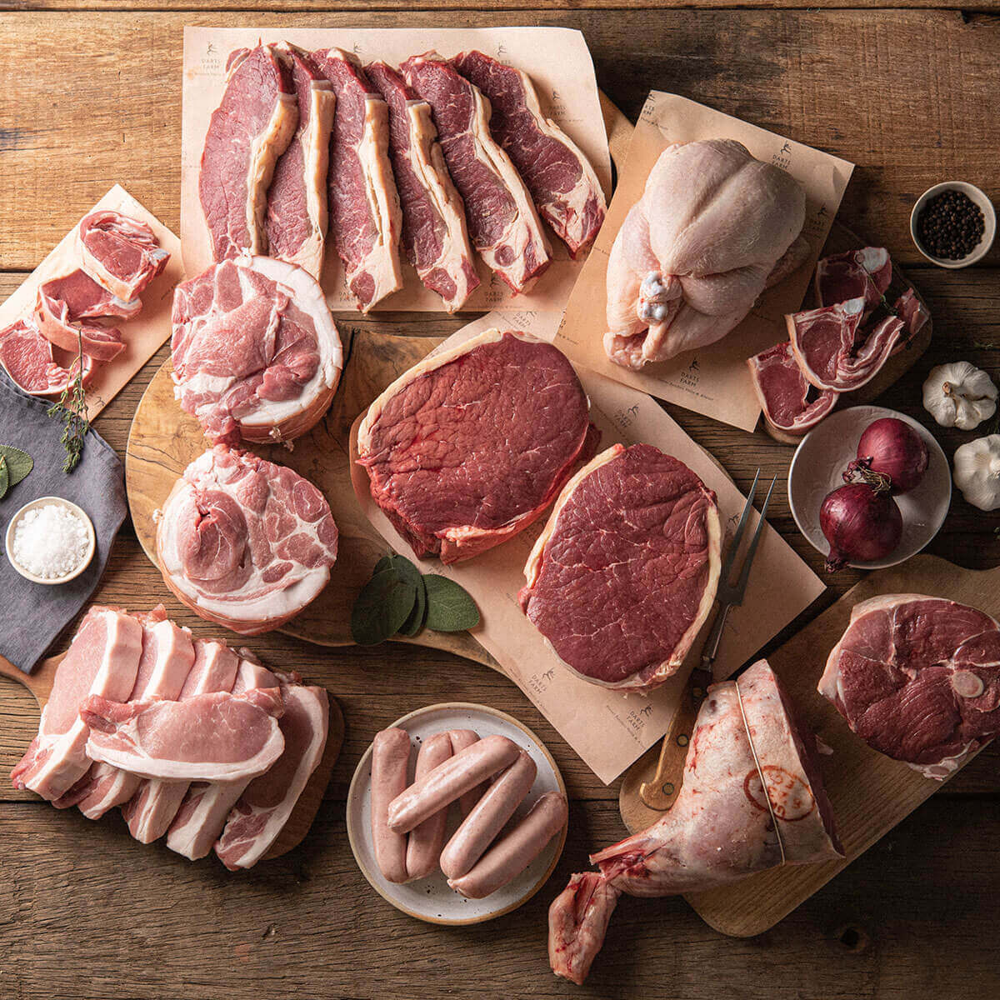

Welcome to Harvel House Farm
Our Products

Our Meats
Our Veg
Bakery
Catering
Our Meats
At Harvel House Farm we pride ourself on the wide range of high quality of meat we provide
Our Veg
We provide fresh fruit and veg daily all locally grown, non-processed, and farm to table.
Bakery
Check out our baked goods for cakes, pastries, and our famous sausage rolls
Catering
We provide top class catering for any occasion, comes with a free tasting day to find your favorites